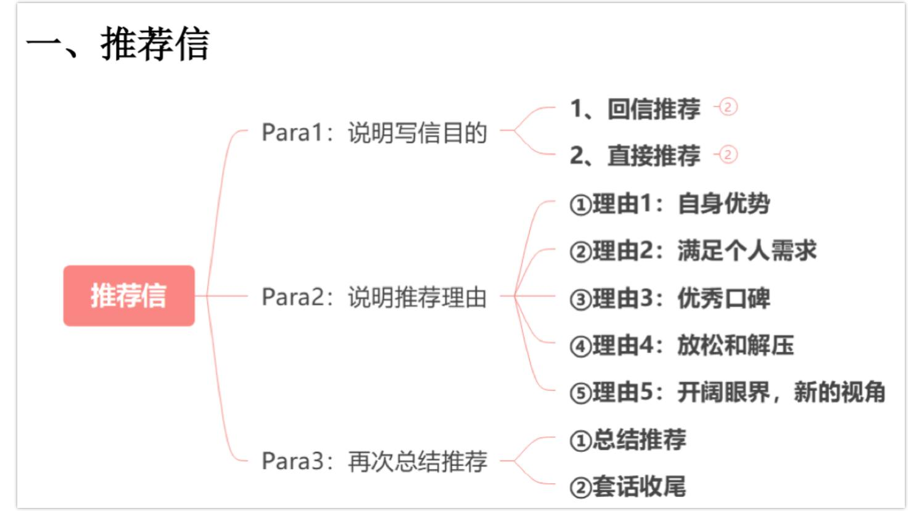

推荐信
一、推荐信
Para1：说明写信目的
1、回信推荐 ②
2、直接推荐 -②

推荐信
①理由1：自身优势
Para2：说明推荐理由
②理由2：满足个人需求
③理由3：优秀口碑
④理由4：放松和解压
⑤理由5：开阔眼界，新的视角
Para3：再次总结推荐
①总结推荐
②套话收尾
（一）首段：说明写信目的
1、回信推荐
I’m so glad to hear from you. Since you mentioned in your letter that you are looking for[推荐类别], I can’t wait to share[推荐内容]with you.
很开心收到你的来信。因为你在信中提到你正在寻找[推荐类别]，我迫不及待地想向你分享[推荐内容]。
2、直接推荐
（二）中间段：说明推荐理由-Why
①理由1：自身优势
What I find fascinating/impressive/captivating/unique about [推荐内容]is its [优势].
我认为[推荐内容]引人入胜/令人印象深刻/极具吸引力/独一无二的地方在于它的[优势]。
When I first came across[推荐内容], it immediately captivated me with its[优势]
当我第一次接触[推荐内容]，它以其[优势]立刻吸引了我。
②理由 2: 满足个人需求
In addition, it’s important to highlight that it is renowned for[优势]and thus is bound to meet your needs for[个人需求].
此外，值得强调的是，它因[优势]而著名，因此必然能满足你对[个人需求]的需求。
In addition, it is worth noting that it shines in[优势]，which will satisfy your expectations for[个人需求]to a large degree.
此外，值得注意的是，它在[优势]方面表现出色，能够在很大程度上满足你对[个人需求]的期望。
③理由3：优秀口碑
Additionally, it has gained immense popularity among young people/college students due to its[优势].
此外，它因其[优势]在年轻人/大学生中获得了极大的欢迎。
Additionally, it has received excellent reviews and high ratings on popular online platforms like Dianping/Douban for[优势], reflecting its popularity and quality.
此外，它在大众点评/豆瓣等热门在线平台上获得了出色的评价和高评分，反映了它的受欢迎程度和品质。
④理由4：放松和解压
Moreover, it serves as an excellent way to relax and unwind, making it perfect for relieving stress after a busy day.
此外，它是放松和减压的极佳方式，非常适合在忙碌一天后舒缓压力。
Moreover, it provides a comforting experience that helps in reducing stress and refresh both mentally and physically.
此外，它带来了舒适的体验，有助于减轻压力，安抚身心。
⑤理由5：开阔眼界，新的视角
What’s more, it offers valuable opportunities for you to gain new perspectives on different cultures.
此外，它提供了宝贵的机会，让你可以获得看待不同文化的全新视角。
What’s more, it provides you with an excellent chance to explore diverse cultural viewpoints.
此外，它提供了一个极好的机会，让你探索多样的文化视角。
（三）结尾段：总结收尾
①总结推荐In light of these compelling reasons, I have no hesitation in recommending it to you.鉴于这些令人信服的理由，我毫不犹豫地向你推荐它。
I hope you will enjoy your time [doing sth.] and discover something new to share.
我希望你在[做某事]的过程中享受时光，并发现一些新的内容可以分享。
②结尾
If more information regarding it is needed, please feel free to contact me.
如果你需要更多关于它的信息，请随时联系我。
Feel free to reach out if you have further questions.
如果你有更多问题，请随时联系我。
真题例子
- 9
2011年小作文
Directions:
Write a letter to a friend of yours to recommend one of your favorite movies and give reasons for your recommendation.
You should write about 100 words on ANSWER SHEET 2. Do not sign your own name at the end of the letter. Use “Li Ming” instead. Do not write the address. (10 points)
模板范文（124词）
Dear Jane,
Para1: ①I hope this letter finds you well. ②You mentioned in your letter that you are looking for an inspirational movie, I can’t wait to share The Pursuit of Happyness with you.
Para2: ①What I find captivating about this movie is its touching and enlightening plots. ②It’s based on the true story of Chris Gardner, who struggles through homelessness to achieve success. ③In addition, it has received excellent reviews and high ratings on popular online platforms such as Douban, which highlights its popularity and quality. ④Moreover, it provides valuable opportunities to reflect on life’s challenges and how determination can help overcome them.
Para3: ①In light of these compelling reasons, I have no hesitation in recommending it to you. ②I hope you will enjoy it and discover something new to share.
Yours sincerely,
Li Ming
第一段：①希望你一切安好。②你在信中提到你正在寻找一部励志电影，我迫不及待地想向你分享《当幸福来敲门》。
第二段：①让我觉得这部电影引人入胜的，是它鼓舞人心的故事情节。②这部电影基于克里斯·加德纳的真实故事，他通过努力摆脱了无家可归的困境并最终获得成功。③此外，这部电影在豆瓣等热门在线平台上获得了出色的评价和高评分，突显了它的受欢迎程度和品质。④更重要的是，它提供了宝贵的机会，让人思考生活中的挑战，以及坚韧如何帮助我们克服困难。
2015年小作文
Directions:
You are going to host a club reading session. Write an email of about 100 words recommending a book to the club members.
Do not sign your own name at the end of the letter. Use “Li Ming” instead. Do not write the address. (10 points)
模板范文（117词）
Dear club members,
Para1: ①I hope this email finds you well. ②As the host of our upcoming reading session, I’d like to recommend the book Sapiens: A Brief History of Humankind by Yuval Noah Harari.
Para2: ①What I find particularly fascinating about this book is its insightful exploration of human history, from our origins to the present. ②In addition, it provides you with valuable opportunities to gain new perspectives on the forces that have shaped our world today. ③Moreover, it has received excellent reviews for its thought-provoking content, making it a perfect choice for deep discussion.
Para3: ①In light of these reasons, I strongly recommend it for our next reading session. ②I hope you will enjoy it and discover new ideas worth sharing.
Yours sincerely,
Li Ming
范文翻译：
亲爱的俱乐部成员：
第一段：①希望你一切安好。②作为我们即将举行的读书会的主持人，我想向大家推荐尤瓦尔·赫拉利的著作《人类简史》。
第二段：①我认为这本书最吸引人之处在于它对人类历史的深刻探索，从我们起源到如今的发展。②此外，它提供了宝贵的机会，让读者能够从新的角度看待塑造当今世界的力量。③而且，这本书因其发人深省的内容而获得了极高的评价，使其成为深入讨论的完美选择。
第三段：①鉴于这些理由，我强烈推荐这本书作为我们下次读书会的阅读内容。②希望你们能够喜欢这本书，并发现一些值得分享的新观点。
诚挚的，
李明
2017年小作文
Directions:
You are to write an email to James Cook, a newly-arrived Australian professor, recommending some tourist attractions in your city. Please give reasons for your recommendation.
Do not sign your own name at the end of the email. Use “Li Ming” instead. Do not write the address. (10 points)
模板范文：（130词）
Dear Professor Cook,
Para1: ①I hope this email finds you well. ②Since you’ve recently arrived in our city, I’d like to recommend a few must-see tourist attractions.
Para2: ①First, I highly recommend visiting The Great Wall, renowned for its stunning scenery, which is bound to meet your needs for outdoor exploration. ②Another great option is The Summer Palace, with its serene lakes, lush gardens, and peaceful pavilions, making it an ideal spot for relaxation and unwinding. ③Lastly, if you are interested in Chinese culture, don’t miss The Forbidden City, where its impressive artifacts and exhibitions provide you with valuable opportunities to gain insights into Chinese heritage.
Para3: ①I hope you will enjoy exploring these places and discover something new to share. ②If more information is needed, please feel free to contact me.
Yours sincerely,
范文翻译：
Li Ming
亲爱的库克教授：
第一段：①希望你一切安好。②既然你刚到我们这座城市，我想推荐几处不容错过的旅游景点。
第二段：①首先，我强烈推荐你参观长城，它以壮丽的风景闻名，必定能满足你对户外探险的需求。②另一个不错的选择是颐和园，它拥有宁静的湖泊、葱郁的花园和静谧的亭台楼阁，是放松身心的理想之地。③最后，如果你对中国文化感兴趣，不要错过故宫，那里的珍贵文物和展览为你提供了深入了解中国文化遗产的宝贵机会。
第三段：①希望你在探索这些地方时能享受其中，并发现一些值得分享的新体验。②如果需要更多信息，请随时联系我。
诚挚的，
李明